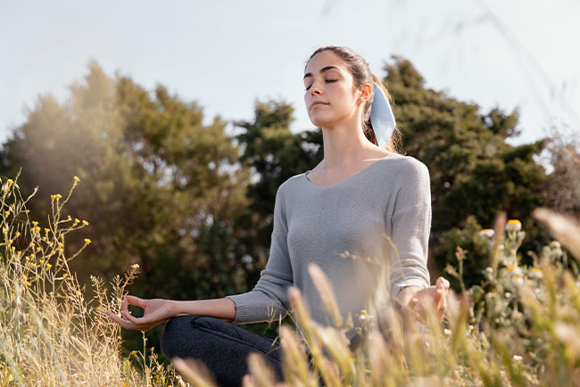
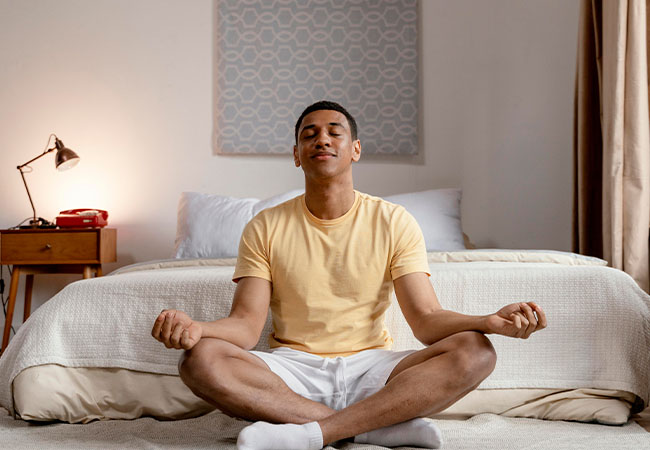

Meditacion
La meditación es un entrenamiento que trae muchos beneficios a nuestra vida, tanto físicos como psicológicos y emocionales. Se trata de una actividad que permite que las personas que la realizan puedan atravesar una experiencia que mezcla relajación y concentración a la vez, por lo que se puede decir que existe una mejora de la calidad de vida.
la meditacion y el desarrollo personal
La meditación y desarrollo personal están en constante relación, ya que esta disciplina propone una combinación entre el cuerpo y la mente. Poder ser conscientes de uno mismo, de la respiración, y liberar a la mente de estímulos que solo sobrecargan, permite que sea posible disfrutar de estar en el tiempo presente.
beneficios de la meditacion
- Reduce el estrés y la ansiedad: Diversos estudios aseguran que meditar cotidianamente genera una mejora de la calidad de vida, ya que reduce los niveles de cortisol, que es la hormona del estrés. A través de este tipo de ejercicio la persona puede sentirse más relajada, con la mochila menos cargada y con una actitud positiva.
- Ayuda a un mejor descanso: La meditación y desarrollo personal también están relacionados, ya que colabora a una mejora del sueño. Practicarla regularmente te permitirá alcanzar más fácil un descanso profundo, sin dejarse llevar por pensamientos negativos que lleven al insomnio.
- Colabora a controlar el dolor: La meditación también puede reducir la percepción del dolor. Las personas que la realizan diariamente en su rutina pueden sobrellevar más fácilmente dolores emocionales y también físicos, como los relacionados a enfermedades crónicas. Por ello hay quienes se capacitan especialmente en la meditación para la salud.
- Aumenta la concentración: Sin dudas se puede llegar a un punto alto de autoconocimiento con meditación, lo cual permite que puedas tener optimismo y un gran nivel de autoestima. Este beneficio es clave para quienes han sufrido de trastornos de depresión, ya que aleja los malos pensamientos y te convierte en una persona que puede mirar el vaso medio lleno.
indice tematico
sobre el autor
informacion sobre el autor